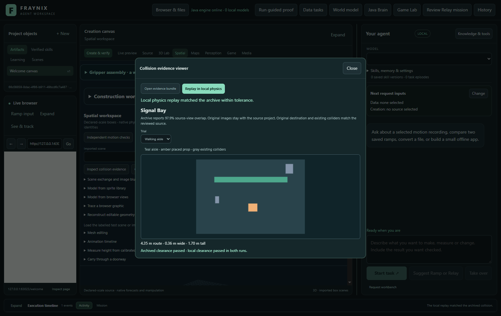
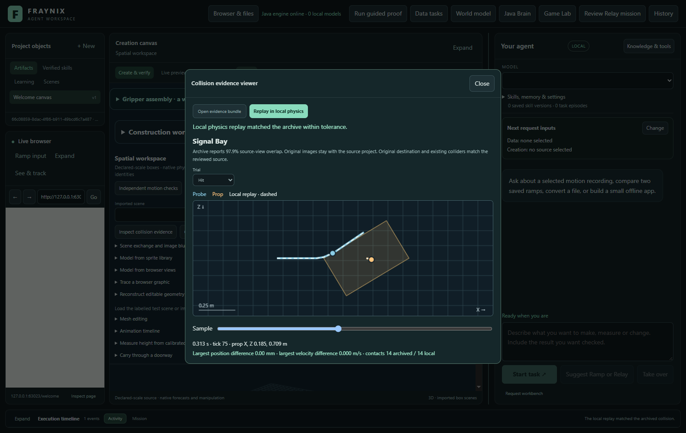
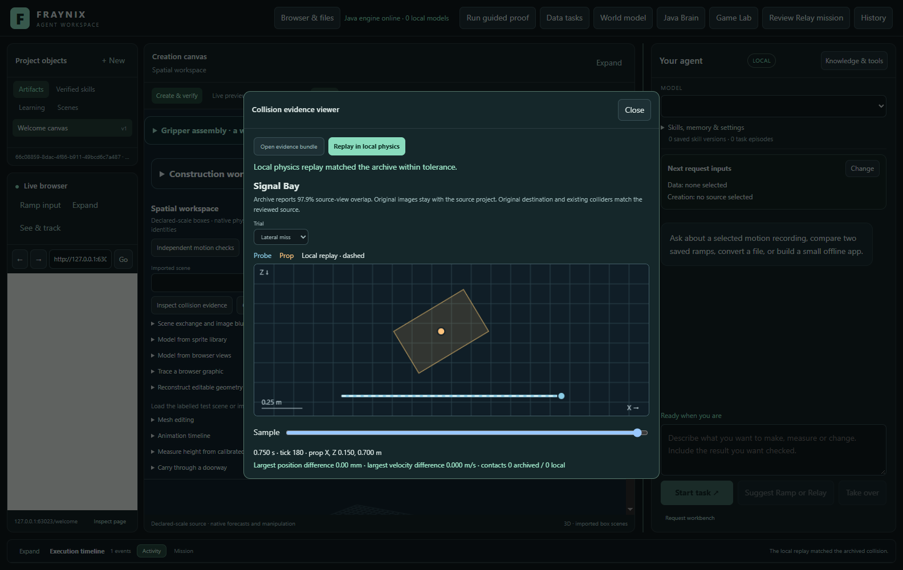
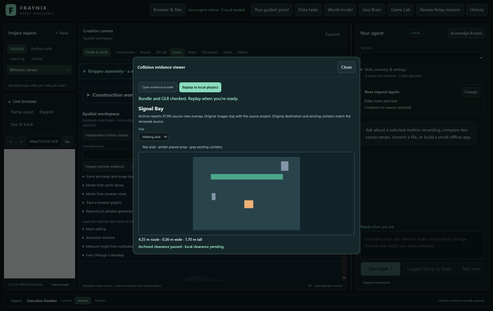

Replay an authored level in a clean project
Check the original destination and replay the contact and walking aisle in a clean project.
Signal Bay reached first contact at tick 75 with 14 contact ticks, zero miss contacts and a 4.35 m clear aisle. Archived and local measurements matched on Windows.

The archived and local walking envelope both clear

The archived and local hit traces agree

The lateral control has zero contacts

The reviewed destination is checked before local execution
System files
Open source